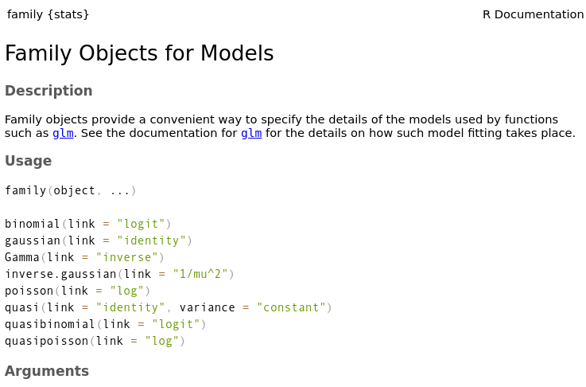

Generalized Linear Models (GLMs)
In a simple linear model, we expect the response variable varies in a linear fashion. That is, some constant amount of change in \(X\) leads to a constant change in \(Y\). We also need those two variables to be continuous and theoretically unbounded. But this is not always how real data behave!! For example, let's think about species richness. This is a zero-bounded integer value (not continuous!), but we are likely very interested in species richness for a variety of questions. Additionally, what about trying to model presence/absence data? Say we wanted to come up with a model for which the response variable is the presence or absence of a gene mutation in a lab rat? These two examples are not well described by a "continuous linear variable". What to do!! We shall simply abandon the linear model :)
The generalized linear model is the more flexible and useful big brother of the simple linear regression. It still uses regression techniques (i.e. fitting a line to some data), and often also uses a version of least squares methods, but adds a bit more complexity to the equation (literally and figuratively!).
These models always contain three things:
1) A linear predictor
2) A link function
3) A error distribution
This section is going to add two components - first the link function, and second, linear predictor. In the simple above example, we still had an error structure, but it corresponded to a normal distribution. Our linear predictor was also just a single value. As we move to talking about GLMs, we'll almost always consider multiple predictor variables in our models, as that's what usually makes sense biologically!
Throughout this section on GLMs, we'll use the following example, which is an excellent example used by JJ Valletta and TJ McKinley in their "Statistical Modelling in R" book, and in Mick Crawley's "R Book". The data can be found here
A long-term agricultural experiment had 90 grassland plots, each 25m x 25m, differing in biomass, soil pH and species richness (the count of species in the whole plot). The plots were classified according to a 3-level factor as high, medium or low pH with 30 plots in each level.
What are We interested in? Well, in many systems, species richness can be affected by biomass, usually negatively. In this grassland, what effect does biomass have on richness? Additionally, if there is a relationship between the two, does it differ across levels of soil pH? Let's set this out in some hypotheses:
\(H1_0\): Biomass has no effect on species richness.
\(H2_0\): Differing pH has no effect on the relationship between species richness and biomass.
Now that we can anchor our thinking with this example, let's go back to the theory for a minute. I encourage the mathematically timid reader to NOT be afraid of the equations!! Take your time and read through them. We'll explain in detail and maybe you will actually find it fun!!
In the most basic terms, in a regression of this nature, we have some independent variable(s) \(\bf{X}\), and a single dependent variable \(\bf{Y}\). For every value of \(\bf{X}\), we want to figure out the expected value of \(\bf{Y}\). We write that like this: \[\text{E(}\bf{Y}|\bf{X})\] which we would say as "the expected value of \(\bf{Y}\), conditional on \(\bf{X}\)"
This expected value is then found as: \[\text{E}(\textbf{Y}|\textbf{X}) = \mu =g^{-1}(\textbf{X}\boldsymbol{\beta})\]
The term in the middle, \(\mu\), is the mean of the probability distribution. Recall from that section that if \(X\) is a random variable, then some expected value \(Y\) is therefore going to be the mean of that distribution for that value of \(X\). How do we get this mean value? Well, here we set it equal to the value on the right-hand side.
The term on the right-hand side of the equation has two parts, \(\textbf{X}\boldsymbol{\beta}\) is the linear predictor and the \(g^{-1}()\) is the link function. We'll discuss the linear predictor first.
Linear Predictor
This is the value actually tells us how our response variable will change as our predictor variables change. Notice that here we're now talking about multiple predictor variables, as it's nearly always the case that a single variable will not be the only thing we're interested in. Introducing a few equations here will be useful.
First of all, notice that both terms here (\(\textbf{X}\boldsymbol{\beta}\) are bolded. That's because they're both actually vectors, that could contain multiple sets of \(\text{X}\) predictor variables, and their associated \(\beta\) values. So, to make this more clear, we'll call the linear predictor the Greek letter eta, \(\eta\) instead. So we can state \(\eta = \textbf{X}\boldsymbol{\beta}\). The exact calculation of \(\eta\) is beyond the scope of the present discussion, so just know that when we have a bunch of predictor variables, and their unknown coefficients (\(\beta\)s), we end up with one single value \(\eta\) that is passed to the link function.
Link Function
This is the heart of what makes a model a GLM. This component essentially allows us to relax the assumption of normality of our response variable, by allowing other distributions, and then defining some function of the response variable that in fact DOES vary linearly with the predictor variables. The math behind how this works is both incredibly interesting, and requires some knowledge of linear algebra, so we will leave the interested reader with an encouragement to take a linear algebra class if they have room in their timetable.
Suffice it to say here that a link function allows us to take some non-linear response data, and "transform" it such that it now varies linearly with the predictor variable(s).
Error Distribution
The error distribution we define will in turn define which link function we choose. Determining what error distribution we need to choose can be crudely but often satisfactorily chosen by plotting the response variable, but a more nuanced approach is possible. See this tutorial from the Quebec Centre for Biodiversity Science for an example.
Species Richness Example - I
Back to our example stated earlier regarding if the relationship between biomass and species richness changes with soil pH. The data for this example can be found here. If you want to download the data and follow along, be sure to check out the Workflow section.
Since we already have our hypothesis stated (and therefore cannot p-hack ourselves), we can proceed to plot our data. However, we need to read it in first. It turns out, it's actually totally easy to pull data from the web using the same readr::read_csv() we're already familiar with. Let's first inspect it briefly:
library(tidyverse) df <- readr::read_csv( "https://exeter-data-analytics.github.io/StatModelling/_data/species.csv" ) # quick summary of our data dplyr::glimpse(df)
## Rows: 90 ## Columns: 3 ## $ pH <chr> "high", "high", "high", "high", "high", "high", "high", "high", "high", "high", "hig… ## $ Biomass <dbl> 0.46929722, 1.73087043, 2.08977848, 3.92578714, 4.36679265, 5.48197468, 6.68468591, … ## $ Species <dbl> 30, 39, 44, 35, 25, 29, 23, 18, 19, 12, 39, 35, 30, 30, 33, 20, 26, 36, 18, 7, 39, 3…
head(df)
## # A tibble: 6 × 3 ## pH Biomass Species ## <chr> <dbl> <dbl> ## 1 high 0.469 30 ## 2 high 1.73 39 ## 3 high 2.09 44 ## 4 high 3.93 35 ## 5 high 4.37 25 ## 6 high 5.48 29
Ok so we can see what types are data are. It's important here to not be tricked by R!! It has read in the data automatically with the Species column as numeric type, but it's in fact integer values. This doens't matter right now, but it will matter when we need to choose an error distribution.
Step 1 - Plot Data
Let's plot our data to see about what we're dealing with.
library(ggthemes) ggplot(data = df) + geom_point(mapping = aes(x = Biomass, y = Species)) + ggthemes::theme_base()

It even looks like there's a linear decrease in richness as biomass increases. So why can't we just assume a normal distribution here? Well, let's take a look at it.
An Aside - Motivation for Link Functions
If we simply assume a Normal distribution, we don't even need to specify a link function. I'm going to fit the model and plot the result, with the code behind the scenes so it's super clear this is NOT what you're supposed to do, as a demonstration.
Here, the lines are representing the fitted regression lines, with the predicted values of species richness for each value of biomass. What's wrong with this? Well nothing yet! But often when we do this type of regression, we want to predict out of sample, or essentially figure out what will happen at levels of our predictor variable we haven't observed. Let's do that here:
newdata = expand.grid(Biomass = seq(min(df$Biomass), 30, length.out = 200)) newdata_predict = cbind(newdata, Species = predict(fit, newdata, type = "response")) # now make our plot ggplot(data = df, aes(x = Biomass, y =Species)) + geom_point() + geom_line(data = newdata_predict, colour = "red") + ggthemes::theme_base()

So we want to predict out of sample. We've done that! We can now make a guess at what values of Species Richness would be present at a Biomass value of 30. But what's wrong with this one?
We're predicting NEGATIVE species richness. That's impossible! We can probably guess that as biomass gets higher, we'll actually probably have something more like an asymptotic decline of species richness. So how can we model this? A link function.
Step 2 - Error Distribution
Now that we know we need to use a link function to appropriately deal with our data, we will start the process of finding that function by figuring out what type of error distribution our response data have.
Let's use our crude by satisfactory method of choosing an error distribution, via plotting our response variable. We can do this a couple ways. As a density plot:
ggplot(data = df, mapping = aes(x = Species)) + geom_density(fill = "goldenrod2", alpha = 0.3) + ggthemes::theme_base()

Or perhaps as a histogram:
ggplot(data = df, mapping = aes(x = Species)) + geom_histogram(fill = "blue2", colour = "black", alpha = 0.3, bins = 30) + ggthemes::theme_base()
What to do? Well, this follows a slightly skewed distribution, but it's discrete integer-valued. For this purpose, a Poisson distribution will work well.
Step 3 - Selecting a Link Function
We have to come up with a function that will allow us to continue. We can see which link functions are supported for the different distributions in the stats package:
?family
And a helpful page will pop up. The beginning of the help page has the following info:
And we can see that for the Poisson distribution, we must use the log link function.
Previously we were interested in \(\mu\) to get our expected value of \(\text{E(}\bf{Y}|\bf{X})\) but we need to come up with some way to link to \(\mu\). It turns out that in this case, our \(\textbf{X}\boldsymbol{\beta}\) can be restated as \(\textbf{X}\boldsymbol{\beta} = \text{ln}(\mu)\), so in this case, \[\text{E(}\textbf{Y}|\textbf{X}) = \text{exp}(\textbf{X}\boldsymbol{\beta})\], because we may recall from math class that the exponential function is the natural logarithm.
Step 4 - Fitting the Model
Okay, let's (Finally!) fit the model. Turns out, yet again, that it's dead simple in R.
mod_poi <- stats::glm(Species ~ Biomass, data = df, family = poisson(link = log))
And we can look at the output here:
summary(mod_poi)
## ## Call: ## stats::glm(formula = Species ~ Biomass, family = poisson(link = log), ## data = df) ## ## Deviance Residuals: ## Min 1Q Median 3Q Max ## -4.7703 -1.5994 -0.1025 1.2722 4.5433 ## ## Coefficients: ## Estimate Std. Error z value Pr(>|z|) ## (Intercept) 3.184094 0.039159 81.31 < 2e-16 *** ## Biomass -0.064441 0.009838 -6.55 5.74e-11 *** ## --- ## Signif. codes: 0 '***' 0.001 '**' 0.01 '*' 0.05 '.' 0.1 ' ' 1 ## ## (Dispersion parameter for poisson family taken to be 1) ## ## Null deviance: 452.35 on 89 degrees of freedom ## Residual deviance: 407.67 on 88 degrees of freedom ## AIC: 830.86 ## ## Number of Fisher Scoring iterations: 4
The output here is very similar to that of lm(), but we'll walk through it en entirety in a second. First however, let's check our model is performing well enough:
Step 5 - Model Evaluation
We need to make sure that our model is agreeing with all our assumptions, and also that it's doing a good-enough job. Model evaluation and validation is actually very involved for more complicated models, but for our simple model, let's first plot our residuals against out fitted values and a QQ plot. We can do that by simply calling plot() on our model object.
par(mfrow = c(2,2)) # this will put the plots in a grid plot(mod_poi)

This calls 4 plots, but we will only look at the first two for now. We see the line of the residuals and fitted values is straight and mostly follows the dotted line, and the QQ plot also follows the diagonal line sufficiently well. These quick diagnostics let us know we can continue.
For more on model evaluation, there's great texts out there, but I like Laurie Tupper's chapter on Model Evaluation as a gentle introduction.
Step 6 - Interpreting the Output
Let's re-call the output here:
summary(mod_poi)
## ## Call: ## stats::glm(formula = Species ~ Biomass, family = poisson(link = log), ## data = df) ## ## Deviance Residuals: ## Min 1Q Median 3Q Max ## -4.7703 -1.5994 -0.1025 1.2722 4.5433 ## ## Coefficients: ## Estimate Std. Error z value Pr(>|z|) ## (Intercept) 3.184094 0.039159 81.31 < 2e-16 *** ## Biomass -0.064441 0.009838 -6.55 5.74e-11 *** ## --- ## Signif. codes: 0 '***' 0.001 '**' 0.01 '*' 0.05 '.' 0.1 ' ' 1 ## ## (Dispersion parameter for poisson family taken to be 1) ## ## Null deviance: 452.35 on 89 degrees of freedom ## Residual deviance: 407.67 on 88 degrees of freedom ## AIC: 830.86 ## ## Number of Fisher Scoring iterations: 4
This output has a number of components
1. Call -- this is the function we used in our model. So to recall, what we're showing here is the that we've regressed Species ~ Biomass which we would say as "species richness regressed against biomass" or "species richness regressed with biomass".
2. Deviance Residuals -- Previously we were talking about just plain old residuals, which is for a single value of x, the distance between the predicted value on the regression line, and the observed value of y. Deviance by itself, is a measure of goodness of fit, wherein the smaller the value, the better the fit of the model and vice versa. Describing the calculation of a Deviance Residual is beyond the current scope, but we can still interpret similarly to residuals, in that if a singular point has a high deviance residual, then it's far from our predicted value.
3. Coefficients -- Possibly the part that we'll look at the most, these values are here shown as representing \(\beta_0\) and \(\beta_1\). So the intercept is the actual y-intecept (remember that \(\beta_0\) is the y-intercept), and the \(\beta_1\) is the estimate of the coefficient on \(Biomass\). It's good to think about whether or not the y-intercept makes sense to interpret. Recall that the intercept value here is the predicted value of species richness if the biomass is zero. In some cases that might be a useful interpretation, but there can't really be any species richness without them having a biomass, so it's not a super useful value in our case.
In our case, the coefficient for Biomass is -0.064. This is the slope relating Biomass to the predicted log of the species richness. Why log? Well, because we've used a log link function. This is actually a really important point as it means our interpretation is not straight forward. In this example, if we have a grassland plot (Plot A) with a predicted (i.e. the value on the regression line) value \(s\), and Plot B has a predicted count of one unit higher, how many more species do we actually predict? If Plot A has predicted number of species \(s\), then it actually has a log count of \(\text{log}(s)\), and Plot B has a predicted number of species \(\text{log}(s) - 0.064\). So how many actual species are there in Plot B compared to Plot A? The inverse of the log we'll recall is the exponential function, so we can get the inverse of \(\text{log}(s) - 0.064\), to get \(\hat{\lambda}_B\) with: \[\hat{\lambda} = e^{\text{log}(s) - 0.064}\] which is rewritten as \[\hat{\lambda} = e^{\text{log}(s)} * e^\text{-0.064}\] which we then can see will simplify to \[s * 0.938005\]. So the amount of species in Plot B is actually ~0.94 multiplied by \(s\). This makes sense, as since we employed a log link function, an increase or decrease in the predictor variable has not an additive but multiplicative effect on the response variable.
Hint: What if you don't want to calculate that every time?? Don't worry, we'll talk about how to do it in R easily, next.
Also note here that the test statistic is actually a z-value instead of a t-value from the lm(). The significance is interpreted as before.
4. Null vs. Residual Deviance -- The deviance of the null model is the amount of deviance in a model fitting just the intercept, \(\beta_0\). The residual deviance is the deviance of the model you're currently using. If the deviance of the null model is low, it means that just the intercept is doing a good job, so you don't likely need to or want to add a large number of predictor variables. The residual deviance being lower means that the model you're using is appropriately better than just the intercept.
5. AIC -- Beyond the current scope to address in sufficient detail, just know that the AIC value is meaningless for just a single model. In fact, this value tells us next to nothing. It is in fact used to compare multiple models to see which model best explains the data. With multiple models, we would compare the AIC values, and the lowest AIC value would be considered the "best" model.
Step 7 - Prediction & Conclusions
Just this model by itself is not incredibly useful, we likely want to plot some predicted values, like the plot above, but now using the proper link function. Recall how from #3 above, we had the tedious task of doing math (heaven forbid!) to find some response values. Let's not do that, but instead ask R to do it for us. We can do this from the predict() function from the stats package. It will take in our fitted model, and some predictor data values, and predict the response value for us. Let's do that now first by just plotting the regression line in-sample (i.e. in the range of biomass values we have data for). Note that to get the "response" value, we need to pass type = "response" to the function.
Typically the best way to do this is make our prediction and bind that to our original dataframe so we have the real observed values of our response variable alongside the predicted ones for plotting. The best way to do that is through a call to mutate() from dplyr.
df_pred <- df %>% dplyr::mutate( Species_pred = stats::predict(mod_poi, type = "response") ) # now bind this new dataframe to our old dataframe
And now we can plot from this new dataframe:
ggplot(data = df_pred) + # plot the observed points geom_point(aes(x = Biomass, y = Species), colour = "black", fill = "purple", shape = 21) + # plot regression line geom_line(aes(x = Biomass, y = Species_pred), colour = "red", size = 1.2) + ggthemes::theme_base()

"But wait! That line isn't straight??" True, because we're using a link function to relate our data linearly, but accomodate for non-linearity :)
Now, if we want to predict out of our sampled data, we could use the predict function again in a new way, by creating a new dataset with some extended Biomass data and the predicted species data. However, this time because we're predicting out of sample, we need to make use of the newdata argume in predict() to tell R which values to use the model to predict across. There's a few requirements. It needs to be passed a dataframe, with columns with the same names as the predictor variables in the model fit formula originally.
# make a dataframe with just the two variables df_pred_out <- data.frame( # make a sequence from our minimum observed amount out to 30 Biomass = seq(min(df$Biomass), 30, 0.1), Species = stats::predict(mod_poi, newdata = data.frame( Biomass = seq(min(df$Biomass), 30, 0.1) ), type = "response") ) head(df_pred_out)
## Biomass Species ## 1 0.05017529 24.06745 ## 2 0.15017529 23.91286 ## 3 0.25017529 23.75926 ## 4 0.35017529 23.60665 ## 5 0.45017529 23.45501 ## 6 0.55017529 23.30435
And the plot:
ggplot(data = df_pred_out) + # plot regression line geom_line(aes(x = Biomass, y = Species), colour = "red", size = 1.2) + ggthemes::theme_base() + labs(y = "Predicted Species Richness")

And here we go! We've finally showed, visually, why we need a link function! We can now predict out to a higher than observed biomass without predicting unrealistic response variable values.
Whether our question required making a prediction plot out of sample or not (ours likely didn't, we probably can suffice with just the first plot of predictions), it's now time to figure out if we've answered our question. Our null hypothesis was there was no effect of biomass on species richness. We can confidently say that we reject this null hypothesis, given the output above.
Species Richness Example - II
Recall that at the beginning of the previous section, we asked if biomass affected species richness, but also if that was the case, if that effect differed across levels of pH. Here our \(H_0\) will be that the relationship between Biomass and Species richness does not differ across levels of pH.
So that means we're asking about the interaction between Biomass and pH. It's important to know that in R, there are two ways to specify an interaction between two variables, \(X_1\) and \(X_2\). The more common way is to use y ~ x1*x2, but what this does mathematically? It turns out in that case, we are in fact fitting a model that looks for an effect of both variables individually, as well as their interaction, which in an R implementation would be equivalent to writing y ~ x1 + x2 + x1*x2 which we can easily see is a more complicated model than just the interaction. To specify just the interaction, we would instead write y ~ x1:x2. Now there's nothing wrong with either of these, but it's important to know which one we're selecting, and why we're selecting that one.
We'll take a moment here and discuss what an interaction means mathematically. In our context we're using pH.
unique(df$pH)
## [1] high mid low ## Levels: high low mid
This is a categorical variable with three levels. What does that mean? Well, if we think back to when we talked about categorical variables in the linear model section, we talked about indicator functions. We'll actually use the same concept here. In this case, we'll create three indicator variables, one for each. So in essence for the model with just the interaction, we're fitting this model: \[ \hat{Y} = \beta_0 + \beta_1\text{pH-LOW}*\text{Biomass} + \beta_2\text{pH-MED}*\text{Biomass} \] \[ + \beta_3\text{pH-HI}*\text{Biomass} \] so here we're fitting an intercept and three beta values, one for the interaction of each level of the pH and the biomass. So if we have a new level of biomass and we want to know the species richness, we actually cannot answer that unless we also know the pH.
For the model that estimates the effect of both variables and their interaction, we (or rather, R), will use one of the levels of our categorical variable as the intercept. In this case, let's assume it takes the "High" pH treatment. So then, we'll use two indicator variable that essentially say:
\[I_{low} = \begin{cases} 1 & \text{if pH value is "low"}\\ 0 & \text{otherwise}\\ \end{cases} \]
and
\[I_{mid} = \begin{cases} 1 & \text{if pH value is "mid"}\\ 0 & \text{otherwise}\\ \end{cases} \]
so our model will end up looking like:
\[\hat{Y} = \beta_0 + \beta_{biomass}*Biomass + \beta_{low}*I_{low} + \beta_{med}*I_{mid} \] \[+ \beta_{BL}*Biomass*I_{low} + \beta_{BM}*Biomass*I_{med}\]
For us, we'll use our model comparison and evaluation metrics from the Linear Regression section. The idea will be to take our variables of interest and compare three different models for species richness ( \(Y\): 1) model with just biomass, 2) model with just the interaction between biomass and pH, and 3) pH, biomass, and their interaction. We'll compare our three models, and evaluate which is best.
We'll essentially walk through all the steps from section I, but fitting each of our models.
Step 1 - Plot Data
Let's plot our data again, but this time, since our other variable of interest is pH, we'll look at that as well.
First, what values does pH take?
unique(df$pH)
## [1] high mid low ## Levels: high low mid
Okay, let's colour our points by those levels:
ggplot(data = df) + geom_point(mapping = aes(x = Biomass, y = Species, fill = pH), shape = 21, colour = "black", size = 3) + ggthemes::theme_base()
Ok so there's a very obvious pattern here!!
Step 2 & 3
We already did this above in the first walk through section, but a poisson distribution with a log link function is sufficient for our purposes here.
Step 4 - Fitting the Model
Now, we need to fit three separate models, so we'll go from least to most complicated:
mod1 <- stats::glm(Species ~ Biomass, data = df, family = poisson(link = log)) mod2 <- stats::glm(Species ~ Biomass:pH, data = df, family = poisson(link = log)) mod3 <- stats::glm(Species ~ Biomass*pH, data = df, family = poisson(link = log))
Since we are doing model comparison, we first want to figure out which model does the best job, and then only bother looking at the results for the best one.
Step 5 - Model Evaluation
So let's do this in a particular way. We'll calculate the negative log-likelihood for each model, since, because our models are nested, we can actually do two Likelihood Ratio Tests, which we discussed in the Linear Regression section.
First we'll extract the log-likelihoods for each
mod1_LL <- stats::logLik(mod1) mod2_LL <- stats::logLik(mod2) mod3_LL <- stats::logLik(mod3)
Now, since we have two comparisons to make, we'll calculate the test statistic first for models 1 and 2:
teststat_mod1_2 <- test_statistic <- -2 * (as.numeric(mod1_LL) - as.numeric(mod2_LL))
And now we can get the p-value that adding the additional parameter improved the model. Note that we can extract the degrees of freedom, which we need for our test, can be extracted from the model itself. If a model object is called mod then the degrees of freedom for our purposes can be extracted with summary(mod)$df[1]:
deg_f_1 <- summary(mod1)$df[1] deg_f_2 <- summary(mod2)$df[1] deg_f_3 <- summary(mod3)$df[1] # calculate p-value p_val_mod1_2 <- pchisq(teststat_mod1_2, df = (deg_f_2 - deg_f_1), lower.tail = FALSE) p_val_mod1_2
## [1] 7.198193e-57
Ok, so definitely <0.05, and we can move to our next comparison, between the interaction model, and the model with the variables included. We'll again get our test statistic:
teststat_mod2_3 <- test_statistic <- -2 * (as.numeric(mod2_LL) - as.numeric(mod3_LL))
And now we can get the p-value:
# calculate p-value p_val_mod2_3 <- pchisq(teststat_mod2_3, df = (deg_f_3 - deg_f_2), lower.tail = FALSE) p_val_mod2_3
## [1] 4.83787e-15
Again, a small p-value, so we can see that in fact this most complex model offers the best combination of variables. If we wanted to, we could also check the AIC values for each model:
AIC(mod1)
## [1] 830.8629
AIC(mod2)
## [1] 576.3159
AIC(mod3)
## [1] 514.3913
Ok, so if we're following our rules of thumb, then we have a clear best model - the third and most complex model. So now, we can move on to interpreting!
Step 6 - Interpreting the Results
So let's look at the summary of our model of choice:
summary(mod3)
## ## Call: ## stats::glm(formula = Species ~ Biomass * pH, family = poisson(link = log), ## data = df) ## ## Deviance Residuals: ## Min 1Q Median 3Q Max ## -2.4978 -0.7485 -0.0402 0.5575 3.2297 ## ## Coefficients: ## Estimate Std. Error z value Pr(>|z|) ## (Intercept) 3.76812 0.06153 61.240 < 2e-16 *** ## Biomass -0.10713 0.01249 -8.577 < 2e-16 *** ## pHlow -0.81557 0.10284 -7.931 2.18e-15 *** ## pHmid -0.33146 0.09217 -3.596 0.000323 *** ## Biomass:pHlow -0.15503 0.04003 -3.873 0.000108 *** ## Biomass:pHmid -0.03189 0.02308 -1.382 0.166954 ## --- ## Signif. codes: 0 '***' 0.001 '**' 0.01 '*' 0.05 '.' 0.1 ' ' 1 ## ## (Dispersion parameter for poisson family taken to be 1) ## ## Null deviance: 452.346 on 89 degrees of freedom ## Residual deviance: 83.201 on 84 degrees of freedom ## AIC: 514.39 ## ## Number of Fisher Scoring iterations: 4
So we can see here the output as we're used to seeing. However, recall, to make easy direct comparisons, we need to think about these values as relating to the predicted log of the species richness.
It's easiest to conceptualize as thinking about predicting a value of species richness (since that what the whole model is supposed to do), given some information. With the information above, let's re-state our full model with the \(\beta\) values plugged in:
\[\hat{Y} = 3.77 - 0.11*Biomass - 0.82*I_{low} - 0.33*I_{med} \] \[- 0.16*Biomass*I_{low} - 0.03*Biomass*I_{med}\]
So to get the estimated number of species \(\hat{Y}\), we require at least two pieces of data: 1) the pH level, and 2) the biomass value. So let's assume the biomass is something like 7.5, and the pH level is medium. What will our equation simplify to? Well, let's plug in our values for our biomass and the indicator functions: \[\hat{Y} = 3.77 - 0.11*Biomass - 0.82*0 - 0.33*1.0 \] \[- 0.16*Biomass*0 - 0.03*Biomass*1.0\] Now obviously the terms with a zero being multiplied will go to zero, and the others can be simplified: \[\hat{Y} = 3.77 - 0.11*Biomass - 0 - 0.33*1.0 - 0 - 0.03*Biomass\] And now we can simplify each term: \[\hat{Y} = 3.77 - 0.11*Biomass - 0.33 - 0.03*Biomass\] Which gives us the value of: \[\hat{Y} = 3.44 - 0.14*Biomass\] or \[\hat{Y} = 3.44 - 0.14*7.5 = 2.39\] Now recall this is on the log scale!! So how do we get it in terms of the number of species? \[\hat{Y} = e^{2.39} \approx 10.91\]
Step 7 - Predictions and Conlusions
As a quick sanity check - when we plot this in this step, how many prediction/regression lines will there be?
So we've done some of the interpretation already, but specifically with respect to our answer above of how many species we should expect under medium pH conditions and with a biomass value of 7.5, let's check if our answer agrees with R. To do this, we'll recall the predict() function from the stats package:
# make a dataframe with a single observation new_df <- data.frame(Biomass = 7.5, pH = "mid") # now predict stats::predict(mod3, newdata = new_df, type = "response")
## 1 ## 10.95721
And we can see that our answers agree! But we likely want to make some biological interpretations. So let's make a plot of our results overall.
# make new data to regress against -- use expand.grid() new_df_full <- expand.grid(Biomass = seq(min(df$Biomass), max(df$Biomass), length.out = 200), # note that pH has to be a factor here pH = levels(as.factor(df$pH))) # make model predictions mod_pred <- stats::predict(mod3, newdata = new_df_full, type = "response") # bind to a dataframe predict_df <- data.frame( cbind(new_df_full, Species = mod_pred) ) head(predict_df)
## Biomass pH Species ## 1 0.05017529 high 43.06662 ## 2 0.10008280 high 42.83698 ## 3 0.14999031 high 42.60856 ## 4 0.19989782 high 42.38136 ## 5 0.24980534 high 42.15537 ## 6 0.29971285 high 41.93058
Now let's make the plot:
ggplot() + geom_point(data = df, aes(x = Biomass, y = Species, fill = pH), shape = 21, size = 3) + geom_line(data = predict_df, aes(x = Biomass, y = Species, colour = pH), size = 1.3) + ggthemes::theme_base()
If we felt like it, we could change this to make it slightly more nice. First, let's put the lines behind the points. We'll also re-order the levels of the factor so the legend reads high, mid, low.
# re-level the factors predict_df$pH = factor(predict_df$pH, levels = c("high", "mid", "low")) df$pH = factor(df$pH, levels = c("high", "mid", "low")) ggplot() + geom_line(data = predict_df, aes(x = Biomass, y = Species, colour = pH), size = 1.3) + geom_point(data = df, aes(x = Biomass, y = Species, fill = pH), shape = 21, size = 3) + ggthemes::theme_base()

And we're done!
The EEB R Manual is the work of researchers at the University of the Toronto
and intended as a purely educational resource. It holds no official
association with the R Foundation. It should not be taken as an
authority on R best practices.
When using this resource,
This content is reviewed regularly for errors and to make improvements, if you see an error and want to help us make this better, see the Contact Page